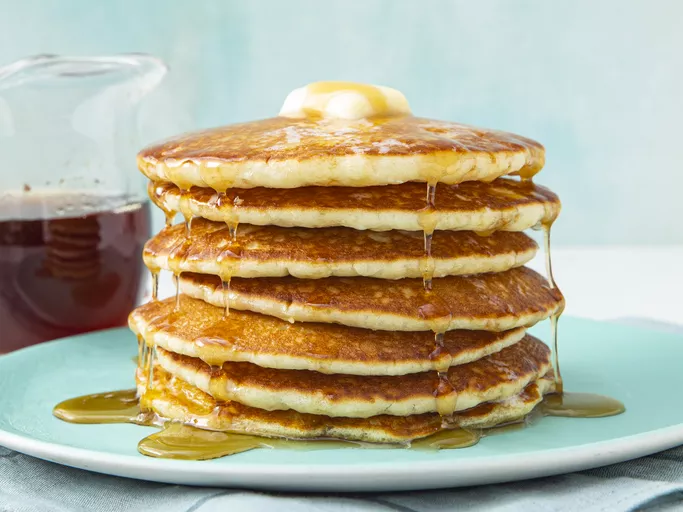

Buttermilk Pancakes

A very light and fluffy pancake recipe that requires fresh buttermilk, but it's the best I've ever made!
Ingredients
- Flour
- Sugar
- Baking powder
- Salt
- Buttermilk
- Milk
- Eggs
- Butter
Instructions
-
Mix the dry ingredients: Combine flour, sugar, baking powder,
baking soda, and salt in a large bowl.
-
Mix the wet ingredients: Beat the buttermilk, milk, eggs, and melted butter together in a separate bowl. Do not combine the wet and dry ingredients until
right before you cook the pancakes.
-
Make the pancakes: Add the wet ingredients to the dry ingredients and mix with a wooden spoon or fork until the mixtures are just-blended. Scoop the batter onto a hot, oiled griddle and cook until the pancake is bubbly on the top. Flip with a spatula and cook
until both sides are brown.
Back to top
Back to homepage